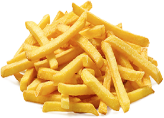
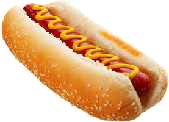

Hamburger adalah sejenis makanan berupa roti berbentuk bundar yang diiris dua dan ditengahnya diisi dengan patty yang biasanya di ambil dari daging, kemudian sayur-sayuran berupa selada, tomat dan bawang bombay. Sebagai sausnya, burger diberi berbagai jenis saus seperti mayones, saus tomat dan sambal serta mustard.
French Fries

French Fries atau kentang goreng adalah hidangan yang dibuat dari potongan-potongan kentang yang digoreng dalam minyak goreng panas. Di dalam menu rumah-rumah makan, kentang goreng yang dipotong panjang-panjang dan digoreng dalam keadaan terendam di dalam minyak goreng panas disebut French fries
Hot Dog

Hot dog adalah suatu jenis sosis yang dimasak atau diasapi dan memiliki tekstur yang lebih halus serta rasa yang lebih lembut dan basah daripada kebanyakan sosis